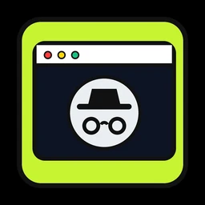

1
Une fenêtre séparée
Ctrl+Maj+N (Chrome, Edge) › Ctrl+Maj+P (Firefox) › Cmd+Maj+N (Safari)
La fenêtre privée démarre sans tes cookies habituels : les sites ne te reconnaissent pas d'emblée (tant que tu ne te connectes pas).

La navigation privée (mode Incognito, InPrivate…) efface l'historique, les cookies et les formulaires quand tu fermes la fenêtre, mais seulement sur ton appareil. Ton opérateur, ton employeur et les sites voient toujours où tu vas.

La navigation privée (Incognito dans Chrome, Navigation privée dans Safari et Firefox, InPrivate dans Edge) ouvre une fenêtre séparée qui oublie : à sa fermeture, le navigateur efface ce qu'elle a enregistré sur ton appareil. Apparue dans Safari en 2005, popularisée par Chrome et son petit espion en décembre 2008.
Les sites visités n'apparaissent pas dans l'historique et ne sont pas proposés dans la barre d'adresse.
EffacéLes cookies, les données des sites et ce que tu as tapé dans les formulaires sont supprimés à la fermeture de la dernière fenêtre privée.
EffacéTon opérateur, l'employeur ou l'école qui gère le Wi-Fi et les sites visités (Google compris) peuvent toujours voir ton activité. Ton adresse IP ne change pas.
Pas cachéLes fichiers téléchargés et les favoris ajoutés restent sur l'ordinateur. Et si tu te connectes à un compte, le site sait que c'est toi.
ResteLe principe en 4 étapes : ce que la fenêtre privée garde à l'écart, ce qu'elle efface, et ce qui continue de voyager sur le réseau.
La fenêtre privée démarre sans tes cookies habituels : les sites ne te reconnaissent pas d'emblée (tant que tu ne te connectes pas).
Pendant la session, le navigateur garde temporairement les cookies et données des sites pour que les pages marchent normalement.
À la fermeture de la dernière fenêtre privée, tout est supprimé de ton appareil. Les téléchargements et favoris, eux, restent.
Ta connexion, elle, ne change pas : même adresse IP, même trajet. Ceux qui gèrent le réseau et les sites visités voient ton activité comme d'habitude.
Chercher un cadeau sur l'ordinateur de la maison sans qu'il apparaisse dans l'historique ni dans les suggestions.
Consulter tes mails chez un ami ou à la médiathèque : rien ne reste connecté une fois la fenêtre fermée.
Ouvrir ton compte perso dans une fenêtre normale et un compte pro dans une fenêtre privée, sur le même site.
Vérifier ton site ou tes résultats de recherche sans tes cookies ni tes préférences habituelles.
Repartir sans cookies pour comparer une offre (vols, hôtels) : cela ne garantit pas un meilleur prix, mais évite d'être reconnu.
Pour être moins visible sur le réseau ou sur le web, la navigation privée ne suffit pas : voici ce qui va plus loin.
Bon pour : cacher les sites visités à ton opérateur ou au Wi-Fi public et ton adresse IP aux sites ; ne te rend pas anonyme (voir notre Décode VPN).
Bon pour : passer par trois relais pour que personne ne voie à la fois qui tu es et où tu vas ; plus lent.
Bon pour : bloquer les traqueurs publicitaires par défaut, même en navigation normale.
Bon pour : DuckDuckGo, Qwant ou Startpage ne relient pas tes recherches à un profil publicitaire.

Chaque vidéo RepoPop Décode t'explique un sujet IA ou tech en moins d'une minute, avec sa fiche complète comme celle-ci.